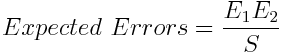

How Many Bugs?
Have you every wondered how many bugs are in the system you're developing? One thing you do know is that there are more bugs than the ones you know about right now. Those pesky testers and users will keep unearthing new bugs seemingly for ever.
A similar problem is estimating the number of typographical errors in a book. Eastaway & Wyndham describe a technique used by printers for doing this. (How Long Is a Piece of String? p160.) A chapter of the book is given to two proof-readers who check for typos independently. Say the first spots E1 errors and, the second spots E2. If the number of errors in common is S, then the Lincoln Index estimates the total number of errors:
Presumably this technique could be used to estimate the number of bugs in a software system. Or at least a well defined part of a system, say a new feature. You could set a couple of testers going on your new feature, and see how many bugs they find. You would need to be careful to make the testing independent. They would not be allowed to talk (or email or IM) and they would not be able to enter the bugs in the bug log until the test runs were complete. Say the first tester found 5 bugs and the second found 7. If the number of bugs in common was 3, then the total number of bugs is roughly 5x7/3 = 11.6, of which 9 have been found so far.
The biggest difficulty applying this technique to software, is defining the scope of the problem. When you're checking for typos the scope of the problem is very clear. There's no argument about what constitutes a typo and what text to check. In a software system the scope is much more difficult to pin-down. You always get into a discussion about whether it's a bug, usability problem or a feature request. More seriously defining what to test is tricky. Lots of bugs only become apparent under certain circumstances. For example we've recently had bugs which occur only in IE6, or only when you're using InProc session state. There's a hiddenness in software, whereas the text of a book is plain for all to see.